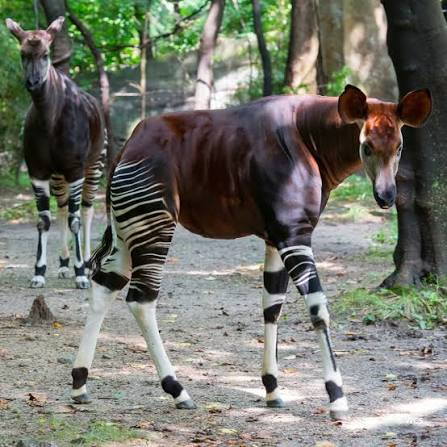
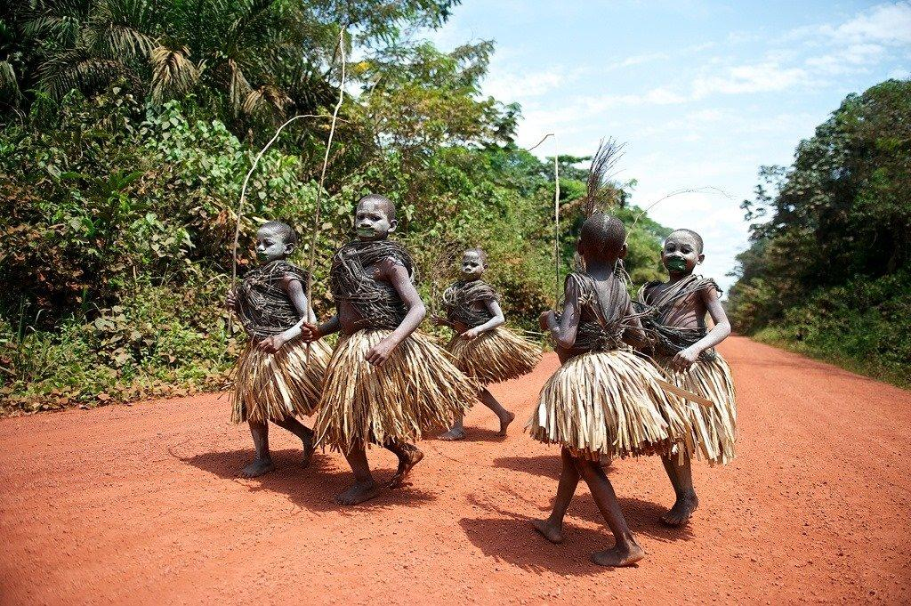

Tourism in Ituri Province
Ituri Province has a rich natural environment and cultural heritage that offer opportunities for tourism. Its forests, lakes, wildlife and diverse communities make it an interesting region to explore. Responsible tourism can also support conservation and local livelihoods.

Ituri Forest
The Ituri Forest is an important tropical rainforest in northeastern Democratic Republic of the Congo. It is known for its biodiversity and ecological importance.

Wildlife and Biodiversity
The region's natural habitats support a variety of wildlife and plant species. Conservation helps protect these natural resources for future generations.

Lake Albert
Lake Albert lies along part of Ituri's eastern border. Its surrounding communities depend on fishing and other activities connected to the lake.

Cultural Tourism
Ituri's different communities have rich traditions, music, dance, food and cultural practices that contribute to the province's identity.

Discover Bunia
Bunia is the provincial capital and an important centre for administration, trade, education and everyday life in Ituri.

Nature and Landscapes
Ituri's forests, hills and other natural landscapes provide opportunities for nature appreciation and responsible outdoor activities.
Responsible Tourism
Tourism development should respect local communities, protect wildlife, conserve natural habitats and support sustainable economic activities. Visitors should also follow local guidance and check current travel and security conditions before travelling.
Explore the Gallery